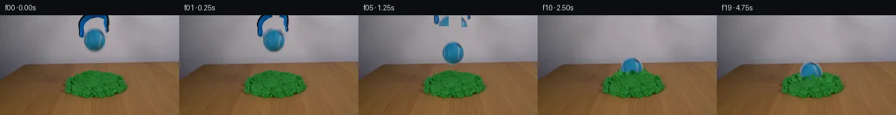

![首帧]()

Round 00
2026-11-04T20:06:40.982553+00:00像素候选变化代码 +254/−0inspection 更新
pixels 1b40c2e92a0b30f4 · code c053f750bc53fe32
查看本轮 generate.py 真实 diff
--- previous/generate.py +++ current/generate.py @@ -0,0 +1,254 @@ +from pathlib import Path + +import cv2 +import numpy as np +from PIL import Image, ImageDraw, ImageFilter, ImageFont + +from artifact_io import save + + +ROOT = Path(__file__).resolve().parent +W, H = 256, 144 +rng = np.random.default_rng(1701) + + +def alpha_over(dst, src, alpha, x, y): + """Composite an RGB sprite into an RGB numpy image.""" + h, w = src.shape[:2] + x0, y0 = max(0, x), max(0, y) + x1, y1 = min(W, x + w), min(H, y + h) + if x0 >= x1 or y0 >= y1: + return + sx0, sy0 = x0 - x, y0 - y + sx1, sy1 = sx0 + x1 - x0, sy0 + y1 - y0 + a = alpha[sy0:sy1, sx0:sx1, None].astype(np.float32) + d = dst[y0:y1, x0:x1].astype(np.float32) + s = src[sy0:sy1, sx0:sx1].astype(np.float32) + dst[y0:y1, x0:x1] = np.clip(d * (1.0 - a) + s * a, 0, 255).astype(np.uint8) + + +def ellipse_shadow(frame, cx, cy, rx, ry, opacity): + yy, xx = np.mgrid[0:H, 0:W] + field = ((xx - cx) / rx) ** 2 + ((yy - cy) / ry) ** 2 + mask = np.clip(1.0 - field, 0.0, 1.0) ** 1.7 + mask = cv2.GaussianBlur(mask.astype(np.float32), (0, 0), 2.2) + # Shadow only affects the already-green mound, never the wall or bare table. + green = (frame[:, :, 1].astype(int) > frame[:, :, 0].astype(int) + 20) & (yy >= 76) + a = (mask * opacity * green)[..., None] + frame[:] = np.clip(frame.astype(np.float32) * (1.0 - a), 0, 255).astype(np.uint8) + + +def make_clean_plate(first): + """Remove the held ball and grabber from the smooth wall by local inpainting.""" + yy, xx = np.mgrid[0:H, 0:W] + rgb = first.astype(np.int16) + blue = (rgb[:, :, 2] - rgb[:, :, 0] > 16) & (rgb[:, :, 2] > 58) + dark = rgb.mean(axis=2) < 73 + object_mask = ((blue | dark) & (xx >= 108) & (xx <= 160) & (yy <= 55)) + ball_area = (((xx - 135.0) / 16.7) ** 2 + ((yy - 35.0) / 18.0) ** 2) <= 1.12 + object_mask |= ball_area + mask = cv2.dilate(object_mask.astype(np.uint8) * 255, np.ones((5, 5), np.uint8), iterations=1) + # TELEA preserves the low-frequency wall illumination well. Blend its result + # with a row-wise interpolation to avoid a dark seam where the tool hits y=0. + inpainted = cv2.inpaint(first[:, :, ::-1], mask, 5, cv2.INPAINT_TELEA)[:, :, ::-1] + plate = first.copy() + plate[mask > 0] = inpainted[mask > 0] + for y in range(0, 59): + line = np.linspace(first[y, 104].astype(float), first[y, 166].astype(float), 63) + soften = cv2.GaussianBlur(line.reshape(1, 63, 3).astype(np.float32), (0, 0), 2.0)[0] + row_mask = mask[y, 104:167].astype(np.float32) / 255.0 + row_mask *= 0.26 if y > 3 else 0.48 + plate[y, 104:167] = np.clip( + plate[y, 104:167].astype(float) * (1 - row_mask[:, None]) + soften * row_mask[:, None], 0, 255 + ).astype(np.uint8) + return plate + + +def extract_ball(first): + # The visible tennis ball occupies x=119..151, y=17..52. + crop = first[17:53, 118:153].copy() + yy, xx = np.mgrid[0:36, 0:35] + # Slightly asymmetric silhouette measured from the reference. + d = np.sqrt(((xx - 17.0) / 15.8) ** 2 + ((yy - 18.0) / 17.0) ** 2) + alpha = np.clip((1.055 - d) / 0.10, 0, 1) + # Repair the few dark jaw-tip pixels at the upper sides using adjacent ball color. + repaired = crop.copy() + for y in range(7, 16): + for x in range(5, 30): + if alpha[y, x] > 0.25 and crop[y, x].mean() < 48: + sx = min(28, max(7, 34 - x)) + repaired[y, x] = crop[y, sx] + return repaired, alpha.astype(np.float32) + + +def extract_claw(first, box): + x0, y0, x1, y1 = box + crop = first[y0:y1, x0:x1].copy() + p = crop.astype(np.int16) … diff truncated; 167 more lines …